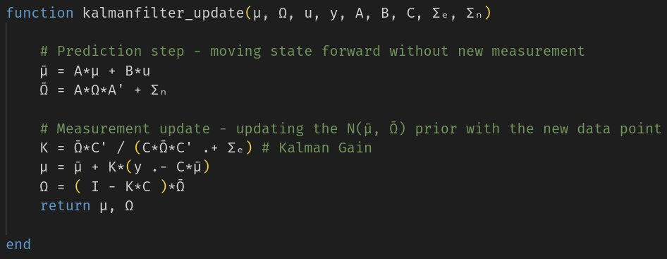
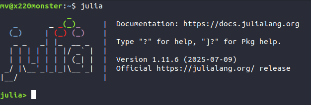
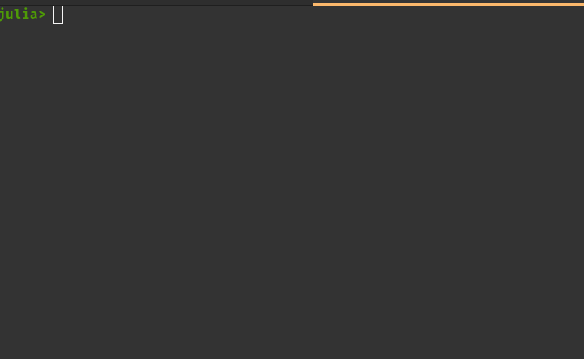
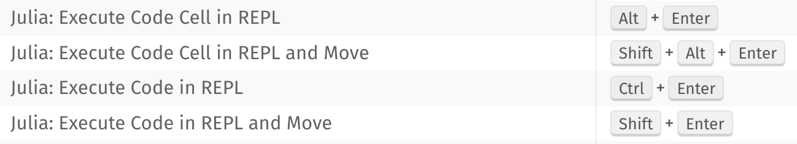
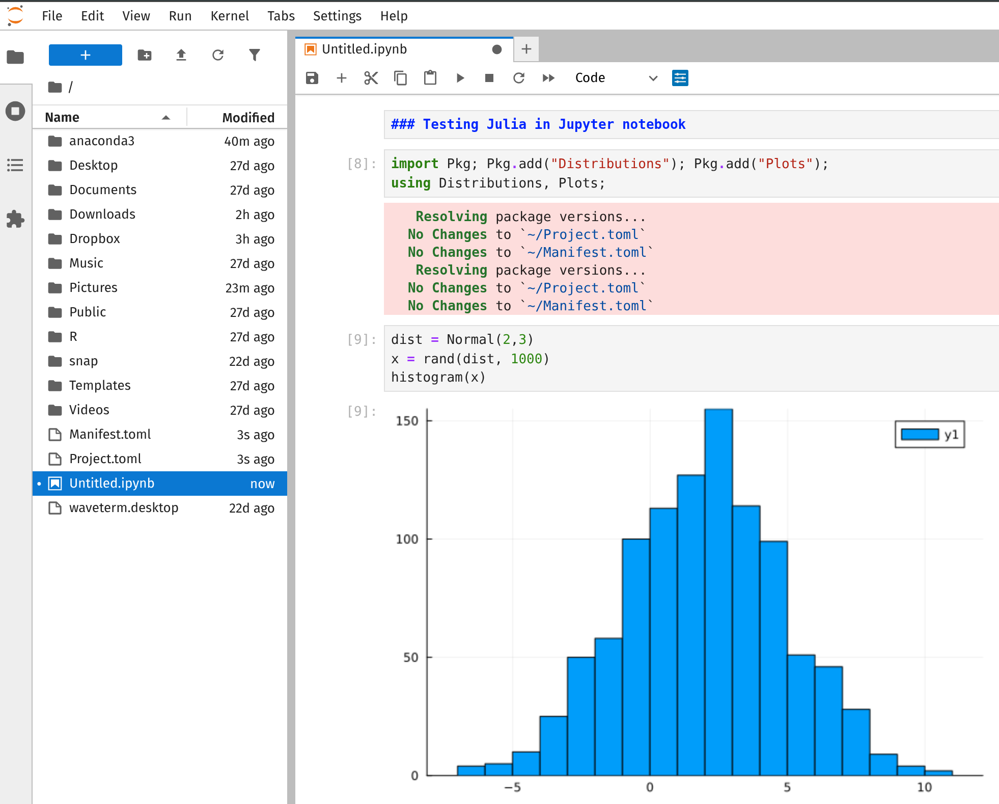
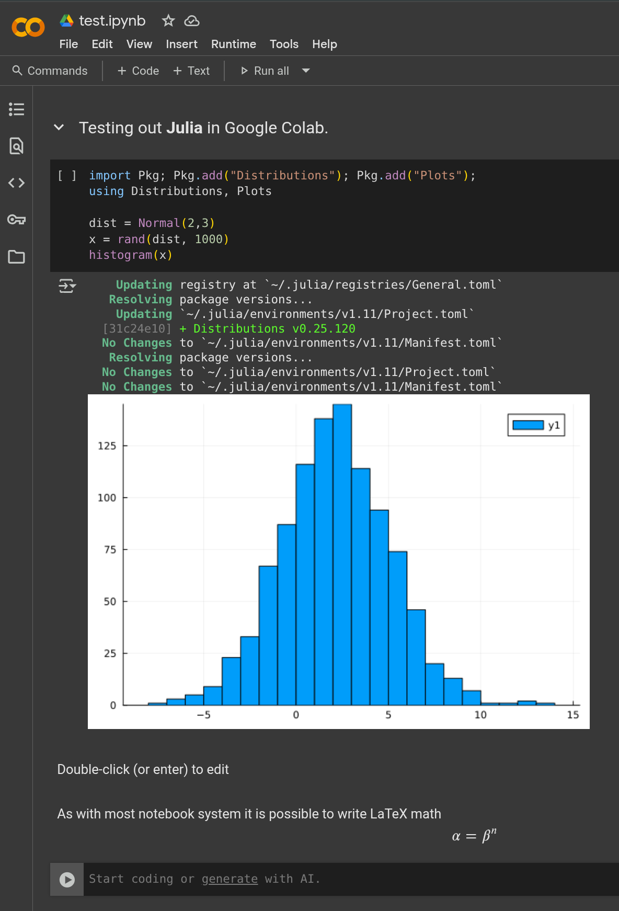
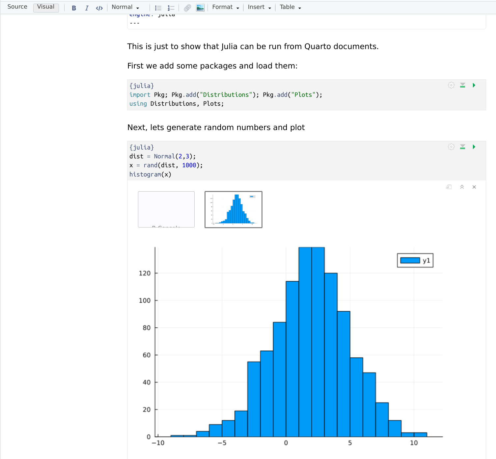
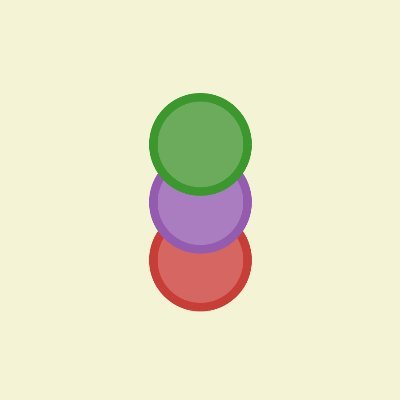

Getting started with Julia
 What is Julia?
What is Julia?
Julia is a high-level programming language for numerical computing.
High-level programming with a syntax like Python.
Fast, almost like C/C++, if done right.
Just-in-time (JIT) compiled. Code is compiled to machine code on the fly.
Numerical linear algebra similar to Matlab.
Multiple dispatch with sophisticated type system makes the Julia highly composable.
Many, many other things.
Why Julia (for a Statistician)?
Speed. No need for a two language combo (R/Python and C++).
Good packages for Statistics and Data Analysis.
Wonderful handling of statistical distributions.
Strong linear algebra with beautiful syntax.
Parallel computing built in from the start.
Unicode (e.g. greek letters in code) makes clear algorithms.
Easy to use R/Python/C/Fortran code from Julia.

Installing Julia
The recommended way to install Julia is using a little tool called juliaup . Benefits of juliaup :
easy install of Julia
allows you to switch between different versions of Julia (see
juliaup --help)notifies when a new Julia version is available.
Instructions on how to install juliaup are here. In short:
 Linux: run the following command in terminal:
Linux: run the following command in terminal:curl -fsSL https://install.julialang.org | sh Mac: run the following command in terminal:
Mac: run the following command in terminal:curl -fsSL https://install.julialang.org | sh Windows, type this in the terminal to install from Windows store:
Windows, type this in the terminal to install from Windows store:winget install --name Julia --id 9NJNWW8PVKMN -e -s msstore
It is not recommended to install Julia from repositories on Linux since the versions there can be rather old.
Juliaup can be uninstalled with the terminal command: juliaup self uninstall
Julia can now be started by typing julia in the terminal (you may need to restart the shell/terminal so your system can find it). You should see something like this:

This what is known as the console in the R world. In Julia we tend to call it the REPL (Read-Evaluate-Print Loop). The REPL is where you can interactively execute code and view the output. We will soon use VS Code as our main working environment (IDE, similar to RStudio, but much more general), but let’s take a first dive into Julia directly in the REPL.
 The Julia REPL (console)
The Julia REPL (console)
The REPL can be used to evaluate commands as in any interpreted language.
Old commands can be found quite nicely in the REPL:
arrow-up and arrow-down goes back in command history. Typing, for example,
myfand then arrow-up cycles old commands that start withmyf. Ctrl+r gives more advanced reverse-search.past commands can be edited and re-used.
The REPL has several prompt modes, for example:
Julian mode, which is the default seen above.
Help mode, activated by typing ? at the prompt. The prompt changes to
help?>and you can search for documentation about functions etc. Backspace takes you back to Julian mode.Shell mode, activated by typing a semicolon ;. The prompt changes to
shell>and you can use the usual shell commands for navigating directories, copying files etc. (On Windows, typepowershellorcmdatshell>to get access to the shell).Pkg mode, activated by typing a right bracket ]. This opens the package manager where Julia packages are added and managed.
Search mode, activated by
ctrl+r, as explained above.R mode. Later, when discuss how R and Julia can work together with the RCall.jl package, there will an R mode available by typing $ which opens an R prompt. More later.

Useful keys bindings (here are many more):
Ctrl + C to interupt execution
Ctrl + L to clear the REPL
Get into help mode and read about the sin function.
Drop into shell mode and change directory to somewhere else on your computer. Then go back to Julian mode (backspace) and check with
pwd()that you indeed changed directory. Go back to shell mode and change the directory back to where you where before this exercise.Go into package mode and type
statusto see if you have any packages installed. (probably not if you have a fresh install).
The package manager: a first look
Similar to R, but a bit more extreme, most things in Julia are available in packages. Packages are typically named with a .jl ending, for example the Distributions.jl package contains many statistical distributions. Julia packages are hosted on GitHub and managed by the Julia General Registry.
Here are some of the most common packages for Statistics:
Statistics.jl (mean, variance, quantile etc)
Distributions.jl (most standard statistical distributions, with rand, pdf, cdf etc)
DataFrames.jl (tabular data manipulation)
Tidier.jl (R’s tidyverse, Julia-style)
Plots.jl (one of the most widely used plotting systems)
Optim.jl (numerical optimization)
GLM.jl (generalized linear models using R’s formula syntax)
Turing.jl (probabilistic programming, similar to Stan)
RCall.jl (using R code in Julia)
DifferentiationInterface.jl (interface to Julia’s many autodiff libraries)
RDatasets.jl (the R datasets that we all love, in Julia)
The package manager is most easily accessed by typing ] to get into Pkg mode. The prompt changes to (@v.11) pkg> which means that you are in package mode in the default environment v.11 (if you are using Julia 1.11, more on environments later).
Some useful commands in Pkg mode:
status, shows the packages installed in the currently active environmentaddPkgName(installs the PkgName.jl package, for example Distributions.jl)rmPkgName(removes the PkgName.jl package)update(checks registry and updates packages)
When we write, for example, ] add Distributions we mean to type ] and then add Distributions on the Pkg prompt.
Once a package has been added it can be used from the Julian prompt (just backspace out from Pkg mode) with the using command: using PkgName . This loads the package in memory and its functions and other objects can now be used.
There are other ways to use a package, like import. The main difference is that
usingexposes all exported function directly without needing to call then with the package name as prefix, e.g.myfunc(3).importdoes not expose exported function directly and requires a call to function to be prefixed with the package name, e.g.PkgName.myfunc(3). This is closer to Python’s namespace convention, but namespaces are less essential in Julia due to multiple dispatch and Julias clever handling of function (method) name collisions.It is also possible to use only specific functions from a package:
using PkgName: myfunc, otherfunc.Here is comparison of package handling in R, Julia and Python.
Language Repository Install packages Use packages R CRAN (Comprehensive R Archive Network) install.packages("pkgname")library(pkgname)Julia General registry (hosted on GitHub) ] add PkgNameusingPkgNameimport PkgNameimport PkgName: myfuncPython PyPI (Python Package Index)
or Condapip install pkgnameconda install pkgnamefrom pkgname import *import pkgname as pkfrom pkgname import myfunc
Addthe Distributions.jl package in the package manager. Typestatusafter install to see that it indeed was added.Use the Distributions.jl package by the
usingcommand from the Julian prompt.Use the package to define a normal distribution object with mean 2 and and standard deviation 3. Go into help mode and search for
Normalto see how this is done. Call the new objectdist.Generate 10 random draws from this normal distribution using the
randfunction on the normal distribution objectdist.Evaluate the pdf of this normal at
x=1using thepdffunction on the normal distribution objectdist.
Running programs
We can write Julia code in any text editor and then execute it in the terminal with the julia command. Here is a small Julia example program (plotfunc.jl) that plots the square function using the Plots.jl package (which needs to added first) and finally saves the graph to a pdf file.
# adding Plots.jl package programatically (needed if it is not already installed)
import Pkg; Pkg.add("Plots")
using Plots
# Define the function that does the work
function plotfunction(func, a, b)
xgrid = range(a, b, length = 100)
plt = plot(xgrid, func.(xgrid), color = :blue, xlabel = "x", ylabel = "f(x)")
return plt
end
# Use the function to produce the plot
plt = plotfunction(x -> x^2, -2, 2) # x -> x^2 defines an anonymous function
# save plot to file
savefig(plt, "myplot.pdf")We can run this code in terminal with the command
julia plotfunc.jlCopy the code above to a text file name plotfunc.jl and run it using the command above. Check the pdf file.
 VS code - the Rstudio for Julia
VS code - the Rstudio for Julia
VS code
The most common way to work with Julia is using the VS code IDE (similar to RStudio, but more general). VS code is free and open source. It can be installed from here. There are many many extensions or plug-ins for VS code for doing mostly anything you want. Here is a 100 sec video about VS code. The official getting started guide is quite good.
The most important command in VS code is ctrl+shift+p which opens the Command palette. From there you can type thing like settings to access all the settings, execute code etc.
Julia in VS Code
The most important extension for Julia is the official Julia extension, which brings together the editor, Julia REPL, plot pane, debugging tools, and much more in one app. Once you open a .jl file in the editor, VS code will give you proper syntax highlighting. Here is 2+ minute getting started video. With the Julia extension installed, try ctrl+shift+p and type julia in the command palette to see some of the commands that you can use for Julia in VS code.
The official documention is here.
Here are some useful commands, keyboard shortcuts and extensions in VS code.
Julia code in VS code can be run in three basic modes:
Run a file in a separate terminal: from command palette: Julia: Run File in New Process or from the Play button in the top right corner of the editor.
Debug mode.
Run interatively in the REPL inside VS code.

shift + enter or shift + ctrl on a line in the editor starts the Julia REPL automatically. However, if you close the REPL, you have to use the command Julia: Restart REPL to start a new one.
If you prefer to not have the output inline in the editor, go to Julia extension settings and search for Execution: Result Type, and set it to REPL.
Open the plotfunc.jl file from a previous exercise in VS Code and run it again using the command Julia: Run File in New Process
Now, run each line in plotfunc.jl interactively in the VS code Julia REPL.
 Notebooks
Notebooks
Julia can be used in all major notebook systems:
 Jupyter (The Ju in Jupyter stands for Julia). Install the
Jupyter (The Ju in Jupyter stands for Julia). Install the IJulia package in Julia first.
Screenshot Jupyter notebook
 Google Colab. Change to Julia in the Edit/Notebook settings menu.
Google Colab. Change to Julia in the Edit/Notebook settings menu.
Screenshot Google Colab notebook
 Quarto. Install the R package
Quarto. Install the R package JuliaCall in R first. Add engine: julia to YAML.
Screenshot Quarto notebook
 Pluto.jl This is a reactive notebook system in Julia. Run from Julia or online.